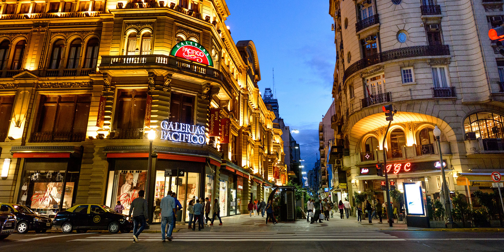
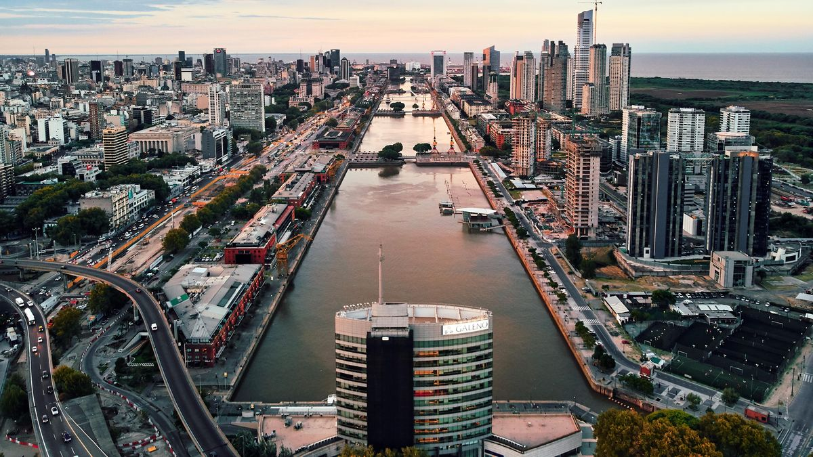

La Ciudad Autónoma de Buenos Aires
La Ciudad Autónoma de Buenos Aires (CABA) es la ciudad capital de la República Argentina, una de los doce Estados nacionales que componen América del Sur.
Es una de las principales capitales del continente y el destino turístico más importante del país.
El área metropolitana de Buenos Aires conforma el mayor aglomerado urbano de Argentina, donde se concentra la mayoría de la población y de la actividad económica.
Después de San Pablo en Brasil, es la segunda ciudad más poblada de Sudamérica y la que tiene la mayor renta per cápita de la región.
A los oriundos de Buenos Aires se les conoce como “porteños”. El área urbana formada por la Ciudad Autónoma de Buenos Aires y los partidos de la provincia de Buenos Aires más cercanos
a ella se denomina en conjunto Área Metropolitana de Buenos Aires (AMBA).

¿Por qué se llama así?
El nombre “Buenos Aires” se remonta a la época de la fundación de la ciudad. Pedro de Mendoza la llamó “Nuestra Señora Santa María del Buen Ayre”.
Luego, en su segunda fundación, Juan de Garay la nombró como “Ciudad de la Santísima Trinidad y Puerto de Santa María de los Buenos Ayres". Con la tiempo el nombre se simplificó hasta llegar a sólo nombrarse como “Buenos Aires.
Turismo y Cultura
El turismo en la ciudad es una importante fuente de ingresos y es posible hallar visitantes de distintos países a lo largo del año, especialmente en las épocas veraniegas y primaverales.
Se calcula que Buenos Aires recibe unos 10 millones de turistas por año y la ciudad es uno de los 20 destinos preferidos del mundo.
La cultura musical de Buenos Aires es amplia y variada, pero el tango es el género musical que más atrae al turismo extranjero. Se trata de un baile típico tradicional heredero de la inmigración italiana, así como de otros ritmos como la milonga o la chacarera.
También es importante la oferta musical de rock en español.
La ciudad cuenta con más de 1000 restaurantes, alrededor de 100 lugares para escuchar, bailar y aprender tango, casi 500 establecimientos hoteleros, más de 200 teatros y museos y una gran cantidad de bares, centros culturales, librerías y shoppings.

Algunos paisajes emblemáticos porteños
- El obelisco de Buenos Aires, donde se levantó por primera vez la bandera nacional, ubicado en el cruce de las avenidas 9 de Julio y Corrientes.
- La avenida 9 de Julio , una de las más anchas del continente, que atraviesa de norte a sur la ciudad en su zona céntrica.
- La avenida Corrientes, donde abundan los cafés, teatros, cines y librerías.
- El barrio de Boca, donde está el camino de los inmigrantes (Caminito) y el estadio de Boca Juniors, la “Bombonera”.